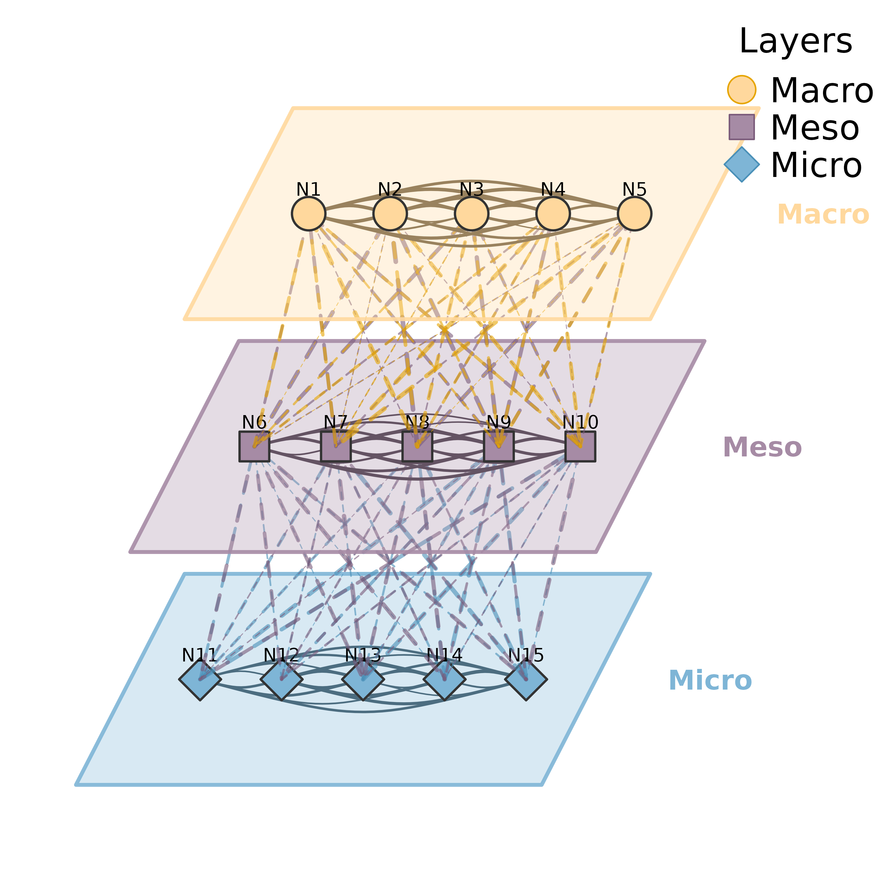
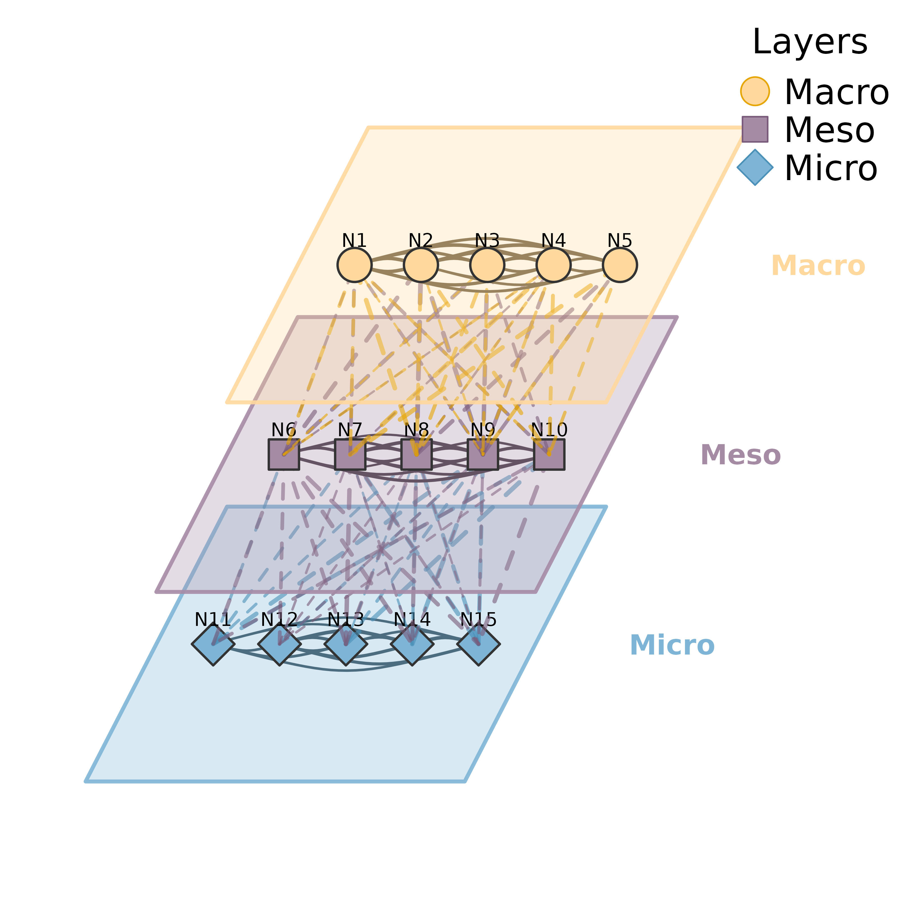
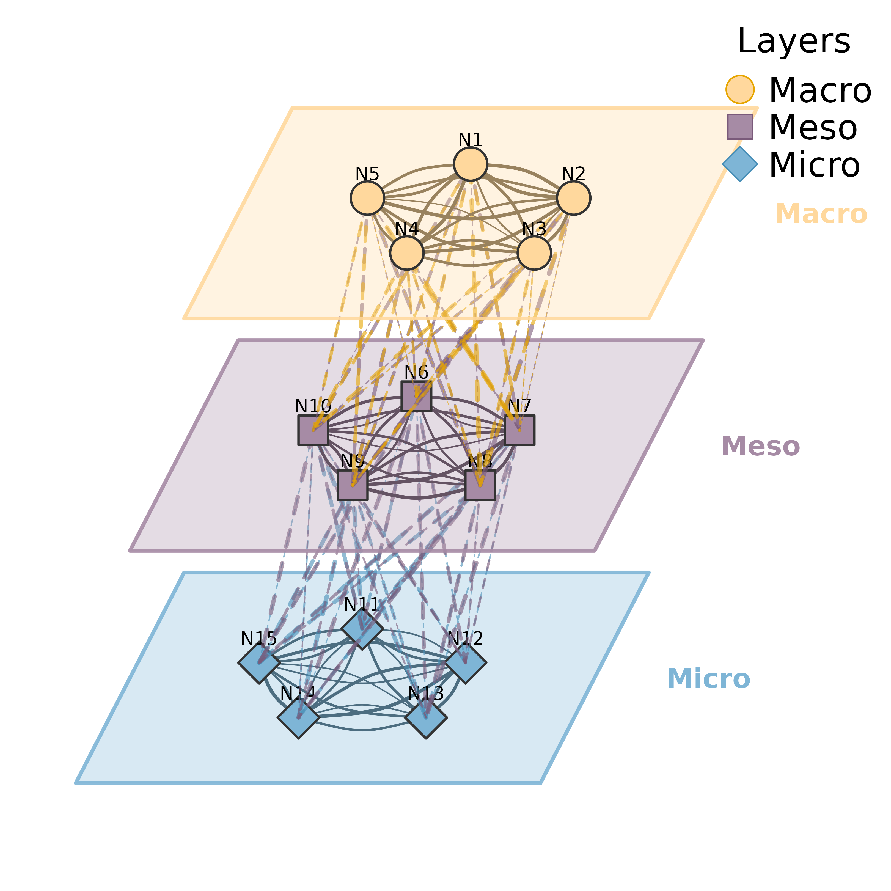

Visualizes multilevel/multiplex networks where multiple layers are stacked in a 3D perspective view. Each layer contains nodes connected by solid edges (within-layer), while dashed lines connect nodes between adjacent layers (inter-layer edges). Each layer is enclosed in a parallelogram shell giving a pseudo-3D appearance.
Usage
plot_mlna(
model,
layer_list = NULL,
community = NULL,
layout = "horizontal",
layer_spacing = 4,
layer_width = 8,
layer_depth = 4,
skew_angle = 25,
node_spacing = 0.7,
colors = NULL,
shapes = NULL,
edge_colors = NULL,
within_edges = TRUE,
between_edges = TRUE,
between_style = 2,
show_border = TRUE,
legend = TRUE,
legend_position = "topright",
curvature = 0.15,
node_size = 3,
minimum = 0,
scale = 1,
show_labels = TRUE,
nodes = NULL,
label_abbrev = NULL,
...
)
mlna(
model,
layer_list = NULL,
community = NULL,
layout = "horizontal",
layer_spacing = 4,
layer_width = 8,
layer_depth = 4,
skew_angle = 25,
node_spacing = 0.7,
colors = NULL,
shapes = NULL,
edge_colors = NULL,
within_edges = TRUE,
between_edges = TRUE,
between_style = 2,
show_border = TRUE,
legend = TRUE,
legend_position = "topright",
curvature = 0.15,
node_size = 3,
minimum = 0,
scale = 1,
show_labels = TRUE,
nodes = NULL,
label_abbrev = NULL,
...
)Arguments
- model
A tna object, weight matrix, or cograph_network.
- layer_list
Layers can be specified as:
A list of character vectors (node names per layer)
A string column name from nodes data (e.g., "layer")
NULL to auto-detect from columns named: layer, layers, groups, etc.
NULL with
communityspecified for algorithmic detection
- community
Community detection method to use for auto-layering. If specified, overrides
layer_list. Seedetect_communitiesfor available methods: "louvain", "walktrap", "fast_greedy", "label_prop", "infomap", "leiden".- layout
Node layout within layers: "horizontal" (default) spreads nodes horizontally, "circle" arranges nodes in an ellipse, "spring" uses force-directed placement based on within-layer connections.
- layer_spacing
Vertical distance between layer centers. Default 4.
- layer_width
Horizontal width of each layer shell. Default 8.
- layer_depth
Depth of each layer (for 3D effect). Default 4.
- skew_angle
Angle of perspective skew in degrees. Default 25.
- node_spacing
Node placement ratio within layer (0-1). Default 0.7. Higher values spread nodes closer to the layer edges.
- colors
Vector of colors for each layer. Default auto-generated.
- shapes
Vector of shapes for each layer. Default cycles through "circle", "square", "diamond", "triangle".
- edge_colors
Vector of edge colors by source layer. If NULL (default), uses darker versions of layer colors.
- within_edges
Logical. Show edges within layers (solid lines). Default TRUE.
- between_edges
Logical. Show edges between adjacent layers (dashed lines). Default TRUE.
- between_style
Line style for between-layer edges. Default 2 (dashed). Use 1 for solid, 3 for dotted.
- show_border
Logical. Draw parallelogram shells around layers. Default TRUE.
- legend
Logical. Whether to show legend. Default TRUE.
- legend_position
Position for legend. Default "topright".
- curvature
Edge curvature for within-layer edges. Default 0.15.
- node_size
Size of nodes. Default 3.
- minimum
Minimum edge weight threshold. Edges below this are hidden. Default 0.
- scale
Scaling factor for spacing parameters. Use scale > 1 for high-resolution output (e.g., scale = 4 for 300 dpi). This multiplies layer_spacing, layer_width, and layer_depth to maintain proper proportions at higher resolutions. Default 1.
- show_labels
Logical. Show node labels. Default TRUE.
- nodes
Node metadata. Can be:
NULL (default): Use existing nodes data from cograph_network
Data frame: Must have
labelcolumn for matching; iflabelscolumn exists, uses it for display text
Display priority:
labelscolumn >labelcolumn (identifiers).- label_abbrev
Label abbreviation: NULL (none), integer (max chars), or "auto" (adaptive based on node count).
- ...
Additional parameters (currently unused).
Examples
set.seed(42)
m <- matrix(runif(225, 0, 0.3), 15, 15); diag(m) <- 0
nodes <- paste0("N", 1:15)
colnames(m) <- rownames(m) <- nodes
layers <- list(Macro = nodes[1:5], Meso = nodes[6:10], Micro = nodes[11:15])
plot_mlna(m, layers)

# \donttest{
plot_mlna(m, layers, layout = "circle", between_style = 2, minimum = 0.1)

# }
set.seed(1)
nodes <- paste0("N", 1:9)
m <- matrix(runif(81, 0, 0.3), 9, 9); diag(m) <- 0
colnames(m) <- rownames(m) <- nodes
layers <- list(L1 = nodes[1:3], L2 = nodes[4:6], L3 = nodes[7:9])
mlna(m, layers)
